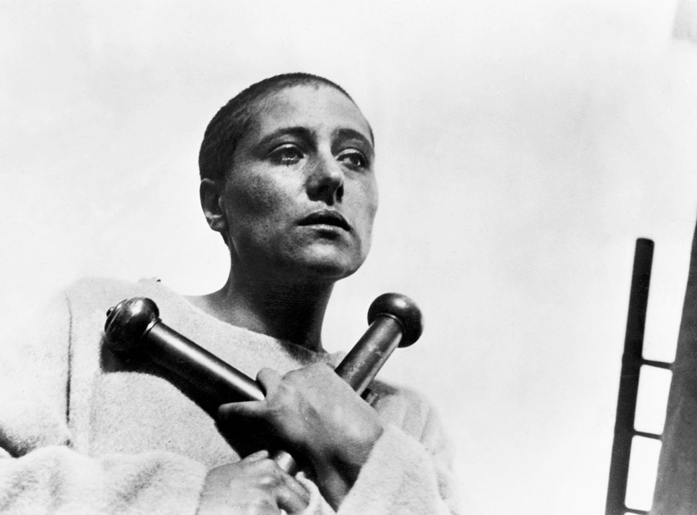

起初，电影只是一门很小的产业，是一项引人注目的发明，但它在整个娱乐世界中占比很小，只是众多表演形式中的一种。然而，很快就出现了只有电影放映的表演，并且为此辟出专门的场所。1905年，五分钱戏院在匹兹堡开张，到1907年，美国已有4 000家这样的电影院。并且，类似的产业逐渐在法国、意大利、英国和德国发展起来，全球观影人数也在不断增长。电影制片公司应运而生，如法国的百代和高蒙，德国的乌发，美国的环球、二十世纪福克斯和派拉蒙。至于好莱坞，这个被橘子树丛包围的加州小镇，因其稳定的气候（也因为加州远离纽约，也就远离了那些不断抛向纽约实验者和投资者的诉讼），成为电影的聚居地。类似于后来电影制作模式的轮廓开始形成。电影明星们开始大放光彩。最重要的是，金钱的光芒开始闪现。
电影的整个支撑体系得到蓬勃发展：宣传机器、影迷杂志、奖项、纪录等等。电影的票房成绩开始相当于体育比赛或世界拳击锦标赛的成绩。《阿凡达》（2009）是有史以来最卖座的电影，但如果我们根据通货膨胀进行调整，最卖座电影的头衔得让给《乱世佳人》（1939），《阿凡达》则排到第14位。美国电影学院在1929年颁发了第一批奥斯卡奖，此后每年都颁发给电影人。奖项设置从短片系列到单部故事片，再加上辅助性项目，逐渐形成了持续至今的标准两类设置。到1929年，美国每周卖出9 000万张电影票，其他地区票数相当。在大萧条时期和第二次世界大战期间，这一数字有所起伏。但到1946年，票数已达到1亿张。然而，到1955年又降到4 600万张，但依然高于1922年的4 000万张。同样，随着票房的增减，电影院的数量自然也是起伏不定：1947年美国开设了20 000家电影院，1959年降至11 000家。
影片一般周三更换，并循环播放。所以，你可以在电影放到一半时走进电影院，直到你再次看到电影的一半为止。这就是现在几乎无法理解的习语“这是我们进来的地方”的由来。幽默作家罗伯特·本奇利就对他喜欢玩的一个游戏说过这样的话。他在电影放到比方说20分钟时走进电影院，他会给自己5分钟的时间来重建剧情。然后，他会依照他的重建来解释电影中的一切。他会继续观察或者说假装观察他的重建与电影原本的剧情有多接近。本奇利声称，他的方法改进了许多电影。
第七艺术理论进入人们的视野，与此同时，对电影观众的无知出现了大量诋毁。作为对这种诋毁的回应，瓦尔特·本雅明在他的文章《机械复制时代的艺术作品》（1935年到1939年的各种版本）中提出一些重要观点。在法国小说家乔治·杜哈曼那本关于美国诙谐而悲观的《未来生活之景象》（Scènes de la vie future ，1930）中，他对电影进行过猛烈的抨击。相关章节的题目是“电影插曲或自由公民的娱乐”。在这部分文本中，杜哈曼以一种同样的极大的反讽，将电影称为庇护所、庙宇、遗忘的深渊和怪物之穴。他说，电影“不需要任何努力”，而且“预先假定没有连贯思考能力”，“那些想法没有连续性”。本雅明同意电影观众的注意力是分散的，但声称有些形式的分散也可作为局部的、中等特定的注意力。谈到电影观众，他说：“即使是分心的人，也能形成习惯。”他又补充道：“观众是审查员，但是个注意力分散的审查员。”
本雅明暗示杜哈曼不喜欢电影，因为杜哈曼不喜欢大众。我们不需要喜欢大众热衷的，当然，除非“我们”就是大众。就连本雅明也准备好谈论一些大众娱乐的“不光彩的形式”。但我们必须看到世界的变化，看到数量未必会破坏质量。
这一争论仍在继续，并指向有关类型的讨论，稍后我会详加讨论。对许多学者和一般观众而言，类型只有在被改造或被公众抛弃，并通过反讽从商业和粗俗中得到救赎时，它们才会生成艺术。因此，被选中的好莱坞电影就会进入艺术电影的范畴，并得到拯救。这类观众对以上提到的对电影抨击的回应，不是成为分心的审查员，而是表现电影如何使他们更加专注。例如，克林特·伊斯特伍德的佳作《西部执法者》（1976）不再是一部西部片，而是一部“西部电影”，对一种本身很愚蠢的风格的高明戏仿。
我对这些事情的看法几乎完全相反。在《西部执法者》中，当赏金猎人告诉伊斯特伍德，他被“通缉”时，我们的英雄以一种有五十年历史的简洁的西部人物的口吻慢吞吞地答道：“想来我很抢手。”身为赏金猎人，对方辩护道：“这年头总得想个方式谋生。”伊斯特伍德无懈可击地淡淡说道：“想死不是谋生的方式，小子。”话音刚落，伊斯特伍德杀死他的追捕者，终结了这场口舌之争。这些台词和动作都很经典，它们不是戏仿，这是一部纯粹的西部片。在西部片中，《西部执法者》算是上乘之作，这并不是因为它在同类型影片中与众不同，而是将同类型题材拍出了更好的水平。而像我刚刚描述的那些谈话时刻中人物平静的会意并不是反讽，不过是这一类型的电影在做它应当做的事。分心的审查员可能跟专注的审查员所给分数相同，却是出于不同的原因。
重要的是，娱乐不需要从自身中被拯救出来成为艺术，并且将其视为艺术也并不是什么好事。作为一名受人欢迎的严肃理论家和电影制作人，彼得·沃伦为我们列出的喜好令人惊讶，因为其中有迪士尼也有黑泽明，有冯·斯坦伯格也有迈克尔·斯诺和荷利斯·法朗普顿。艺术和产业可能不会一致，它们当然不是同一种事物。但当我们将它们放在一起思考时，我们会受益无穷。
起初，电影是工人阶级的娱乐，对中产阶级来说有点过于粗糙和现成了。然而不同的社会群体很快融合在一起，形成一个很大的观众群，电影院也变得越来越优雅豪华。但电影和戏剧之间还是存在着重要区别，或者说这个重要区别存在于整个大众艺术与更有排他性和选择性的观剧（举例而言）体验之间。它与阶层无关，而是同人们的关注点相关。在20世纪的大部分时间里，人们去影院并不是为了某一部电影；节目单上有什么他们便看什么，很多人每周要去影院两次甚至更多。我们现在会为某一部电影买票，一张票对应到观众席上的某个座位，在20世纪60年代之前，这样的观念对大多数电影观众而言是陌生的。当然，也不是说完全陌生，至少在心态上是这样。有一些电影，很少去电影院的人觉得必须去看。有获得巨大成功的电影，也有遭遇惨败的电影，但中心习惯依旧：观众还是会去电影院。
当然，我们现在每周去一次电影院，看一部从报纸上精心挑选的电影，并在网上预订座位，这是一种习惯，但它不是同一种习惯。过去看电影有一种饱和状态，它提供了非常繁多的电影参考，观众无须聚精会神也能跟上剧情，而只用（仅仅只用）享受其中。这就是为什么本雅明会认为观众是分心的审查员。毫无疑问，这个审查员是真正的专家，她能分辨出她所喜爱的明星脸上最细微的表情变化，她知道那个温文尔雅的恶棍具体在何时会变得肮脏下流，且总能确信当女主人公需要时，她会忍住眼泪，找到内心的力量。魅力在于，这个审查员永远不会把自己当作专家，至多算影迷，但她可能对做一个影迷更不感兴趣，她可能只是觉得电影是一个充满想象力的家园，她熟悉这个世界的所有角落，她不会感到惊讶，除非有时候惊讶是因为她所理解的故意设计。这是一种宝贵的了解，只有某种饱和状态才会提供这种了解。
在一些国家，这种饱和状态，不仅得到了多产的本国电影制作和大量的电影进出口的保障，还得到了电影体系即电影制片公司的生命力的确保。所以，当这一体系消亡，传统形式的制片公司也就走到了穷途末路。整个体系作为垄断体制被逐渐打破：制作电影的公司同时也开设电影院，他们不需要把电影卖给他人，而只需把电影拷贝发往他们自己的特许电影院。看上去观众似乎没有多少选择，但有很多电影观众可以选择不看，当然，他们根本不知道他们所没有的选择。
我们不需要浪漫化（或轻视）这类观影方式，但许多关于电影的争论都基于与它的联系或无联系。有批评家声称他们已经进入了劳伦斯·阿洛威所述的“目标区”，即他们在成为冷静的评论者之前，首先是对电影着迷的观众。或者他们声称从一开始就与电影有着别样的联系。例如，宝琳·凯尔喜欢电影院，但她认为电影是一个危险的抽象概念，是对艺术这一概念迫在眉睫的死亡威胁。她写道：“如果我们在电影院长大，我们就知道好电影是垃圾中觅得的明珠，而非学究式的、体面的传统的延续。”警觉的观影方式意味着怀疑所有的艺术主张，（若绝对必要）在无艺术主张的作品中找到艺术之光。这个角度与苏珊·桑塔格在一篇著名文章中所说的“迷影”（cinephilia）截然不同。迷影是指爱上电影，而非电影院，你热爱它倾尽全力所做到的，它成为艺术你也不必要感到难过。
但迷影可以包括在电影院观影，正如苏珊·桑塔格明确表示的：
自老式观影的最后时光以来，电影观众发生了各种各样的变化。然而，到目前为止尽管他们仍然是电影观众——也就是说，他们仍旧一起坐在黑漆漆的电影院里——他们却变得异常年轻了。这就解释了仓促占有这一市场的大量电影的存在，却让我们难以解释那些受众不可能是此类观众却获得了巨大经济效益的电影。当然，这些年轻人并不颁发奖项或奥斯卡奖。当电影评论家想不出要说什么时，他们才会把矛头指向这些年轻的观众，但原本无视这一点双方似乎也很和谐。但与此同时，另外一些事情发生了，并且自20世纪70年代以来就一直在发生。电影院不再是观看一部电影的唯一场所，也不再是观看大多数电影的场所。
如今，电影院 [4] 都被围挡起来，成了复兴派教堂或宾果游戏厅，或者说完全消失了。如果它们仍是电影院，那么，也被分隔成了有独立银幕的小包间。《综艺》（Variety）愉快地报道说，1990年美国有23 689块银幕，但很少存在于单银幕电影院。但就在不久前，在20世纪50年代和60年代，甚至在英国和美国一些相对较小的城镇，每座都有六七家单银幕电影院，这些电影院都有着充满异国情调的名字和奇特的建筑风格。在我长大的地方林肯，这些单银幕电影院名字有格朗、中央、萨沃伊、皇家、丽兹和拉迪翁。到处都有类似的名字，影射着奢华的酒店和高品质的生活。在洛杉矶，它们被叫作俄耳甫斯、里亚尔托、摩天、环球、阿卡德、卡梅奥、罗克西，现在还叫这些名字，而且这还只是一条街道一边的情况。
这些电影院的内部看起来像歌剧院或舞厅，甚至像是更宏伟或更具异域风情的场所，墙上和天花板上都镶着大片的金箔；但通常也会用一些装饰艺术，喜欢彩色的布光，红的、绿的、蓝的。以下是1925年关于芝加哥国会剧院报告的一部分：
在电影院重视声效后的很长一段时间里，这些地方通常都备有风琴，真正让人兴奋的地方不是电影放映前的流行曲调演奏，而是风琴的展示。风琴不知从何处升起，闪闪发亮，好像游乐场，风琴师陶醉地演奏着。演奏一结束，风琴又再次沉入黑暗。这是纯粹的魔法，也是电影院过去的部分寓意：它们是这个陌生之地的原住民，我们不过是游人，带着所有尘埃、烦恼和梦醒人生的记忆到此一游。
关于这些建筑的生命，它们的建筑师、受众和社区，都有着既精彩又怅然的研究。从某种意义上说，正是现在，我们才能够看到它们所牵涉的文化主张是多么宏大和复杂。例如，《绿野仙踪》并不总是充斥着浮华和魅力，它曾以黑白的画面讲述着质朴的剧情。直到20世纪50年代末，在大多数地方都会播放一部新闻影片，充满了真实的、前进生活的侵入性画面，短片末总是有一个（始终是男性的）声音，似乎在通过它那不绝于耳的专横的韵律和节奏来保证真实。如果《绿野仙踪》的解说也由这种声音来担任，那么这部电影也会成为一部纪录片。
像《穆赫兰道》（2001）和《银翼杀手》（1982）这些电影，重新登上并再次神秘化了这些神奇的地方（两部电影都使用以前的电影院作为主要的播放场所），但它们是以一种相当孤独的方式被使用的。正如斯蒂芬·巴伯在他的一本关于洛杉矶老电影院以及它们所播放的作品的书中所说的：一幅幅关于死亡的画面，清除，然后电影便结束了。事实上，“电影的结束”是巴伯对电影的一切变化所反复使用的夸张性说法，他也把这些变化描述为转变、突变或同化成为某种多个选项的数字组合。他还表明了“电影影像如何……似乎与它们自身的衰退和败落串通一气”，而此时电影甚至还没有出现任何衰退和败落的迹象。这些华丽的电影院是否造就了它们自己的梦想和所有人的陨落？
不，但电影观众总是知道这些建筑是一种贿赂，也是一种幻想。电影中不只有嬉闹和欢乐的结局，也有黑暗和死亡。而这些建筑光鲜亮丽的不真实，不可能是事实的全部。我们接受了电影院的风格和电影的氛围：不是所有东西都必须相衬或有意义。我们不认为风琴演奏会影响新闻影片，也不认为其中任何一项会影响坐在后排约会的人们。
图9 即将上映与即将下映
但请考虑一下这个场景。那是1948年，我们镇上四所文法学校的小学生没去上课，而是被带到电影院。毫无疑问，这种事情也发生在其他许多城镇，为了展现电影在英国是文化的一部分。2 000个孩子涌入丽兹影院，观看劳伦斯·奥利弗的《王子复仇记》。有没有可能，这些教育的热忱并没有为我们改变丽兹影院？有没有可能丽兹影院并没有让《王子复仇记》比它在一家艺术影院（举例而言）更像一部电影？当然，我们现在知道，这是一部电影，还包括一个近乎自杀的场景，这是劳伦斯·奥利弗从希区柯克的《蝴蝶梦》（1940）中大量借鉴的，而奥利弗也在这部电影中担任主演。但在当时，奥利弗的《王子复仇记》被当作纯粹的文化出售给我们，除了参与（或被拖到）学校戏剧演出，这是我们大多数人看到莎士比亚的唯一方式。我们相信这一点，但丽兹影院和它的霓虹灯在向我们低语另外一些东西，这些电影院或许也经常向世界各地的观众倾吐这些东西。它们说，它们无法承诺给我们带来魔法、神秘和宏伟，无法做到它们的建筑所传递出来的华丽的信息；但即便如此，它们也不会让我们失望，因为无论是新闻影片、《王子复仇记》还是《飞侠哥顿》，它们永远不会让任何东西只以自己本来的面貌呈现。这种变化非常轻微，但可能正是它吸引力的一部分。我们不会知道在那里为何世界会有所不同，只知道它的确不同了。即使到了2005年，哲学家雅克·朗西埃也可以把电影院描述成一间做梦孩童的卧室和一座遗失的博物馆的结合体。
当然，类型（genre）的概念比电影要古老得多，而且它是绘画、文学和音乐研究的一个重要方面。然而，电影可能比其他任何表现形式或媒介都更喜欢类型。好像重复、识别、变化、更新的乐趣是电影一个必要的组分，也是观众所乐见的东西。
许多或者说多数后浪漫主义的高雅文化作品假装我们从未见过或听到过类似类型的东西，这些作品的梦想和定义是原创性和独特性。相反，任何媒介的所有类型作品都假定我们看着它们的相似性长大，而且想像中永远都不记得第一个的模样。阅读史诗或观看西部影片都是为了在脑中塞入一大团先例和相似的东西，它们无须看上去像暗示一样直接，而是所有的作为一个整体 来起作用，正如类型本身给人的感觉一样。例如，所有我们都不太记得的重要战役和体育竞技，所有我们曾目睹的枪战。我们或许甚至可以把其中一些组合起来，像合成的肖像一样，但它们仍然是某个类型的一部分，作为任何新成员发挥作用的背景。弗兰兹·卡夫卡使我们从“一堆模糊的老故事中回忆起了一句话，尽管这句话可能不曾出现在任何一个故事中”。一个绝妙的想法。这样的回忆或者说编织而成的这样的回忆浮现的时刻来临时，一个类型就随之诞生了。菲利普·拉金在他的诗《离去之诗》（“The Poetry of Departures”）中很好地描述了这种效果：
我们甚至不需要“辗转”（“fifth-hand”）这个词：我们一直都听说过，就像在我们自我欺骗的某处，我们已经信奉了“大胆”、“净化”和“原始力”这些词所表示的虚假自由。只有留守家中的人才会这样说话。其他人都已离开。
电影有许多类型和亚类型（喜剧、神经喜剧、黑色喜剧、伊林喜剧、喜剧惊悚片等），光是给它们定名就能让你听起来像是饶舌自负的波洛涅斯。但它们都有大量的共同点，足以让我们比较它们，并看看它们之间的显著差异是如何产生的。我将审视三个发展较久且稳定的类型，即西部片、歌舞片和强盗片，然后简单谈谈几乎是我虚构的一种准类型电影，我把它称为“老朋友”。
第一部西部片是埃德温·鲍特的《火车大劫案》（1903）。之后数十年，数以千计的同类电影紧随其后。尽管霍华德·霍克斯和其他导演都制作过优秀的西部片，但在这里要提到一个伟大的名字：约翰·福特。一份非常重要的西部片清单包括：《篷车队》（詹姆斯·克鲁兹，1923）、《铁骑》（约翰·福特，1924）、《关山飞渡》（约翰·福特，1939）、《红河》（霍华德·霍克斯，1948）、《枪手》（亨利·金，1950）、《百战宝枪》（安东尼·曼，1950）、《正午》（弗雷德·金尼曼，1952）、《原野奇侠》（乔治·斯蒂文斯，1953）、《从拉莱米来的人》（安东尼·曼，1955）、《搜索者》（约翰·福特，1956）、《赤胆屠龙》（霍华德·霍克斯，1959）、《双虎屠龙》（约翰·福特，1962）、《豪勇七蛟龙》（约翰·斯特奇斯，1960）和《日落黄沙》（萨姆·佩金帕，1969）。
到清单上的最后一部电影时，西部片已经走向了一个全新且明显不同的方向，即所谓的“意大利式西部片”，最有名的来自赛尔乔·莱昂内（《荒野大镖客》，1964；《黄昏双镖客》，1965；《黄金三镖客》，1966）。这些是主要在西班牙拍摄的意大利电影，最初被认为是令人愉快的滑稽模仿，是采用了只有北美人才能说好的电影语言的欧洲式重复。但他们不是滑稽模仿，就像让——吕克·戈达尔的《筋疲力尽》（1960）不是对美国强盗片的模仿。它们是一种程式化的致敬方式，进入并改变了这一类型。如今，所有电影史学家都把它们视为西部片，无论如何，它们都给自己名义上的故乡带来了一个显著的回报：克林特·伊斯特伍德的西部片。伊斯特伍德从电视中脱颖而出，成为莱昂内电影的主演，他作为演员和导演，给西部片旧有的主题注入了新的活力。奥逊·威尔斯声称，如果伊斯特伍德之外的任何人主演了《西部执法者》，可能都会成为经典，等到伊斯特伍德拍摄了《不可饶恕》（1992）时，大家才开始认为他的一切制作都是经典。
在西部片的历史上有很多交汇处，有时，西部始于日本。《豪勇七蛟龙》模仿黑泽明的《七武士》（1954），《荒野大镖客》基于黑泽明的《用心棒》（1961）。这是否意味着西部片不属于美国？不完全是。但这确实提醒了我们，正如从爱默生这样的哲学家到奥巴马这样的政治家一直所说的那样，美国不是一个地方，或者说不仅仅是一个地方。美国是一个地方概念，神秘的西部是它最发达的地区之一。那里的时间总处在历史边缘，社会即将形成，律法就要确定，铁路指日可待，内战刚刚结束。如果你有牛，有人会把它们偷走；如果你有房子，有人会把它烧掉。可能有一个治安官或执行官，也许是个好人，却软弱无能；或是一个坏蛋，受雇于一帮恶棍，他们聚集在这个区域，就好像这个地方只为他们而建。就故事而言，的确如此。如果没有人枪击，怎么可能有枪战？
走运的话，四处游走的枪手将骑着马来到镇上，他站在美德这边，惩杀恶棍，然后继续前行。他不能留下来，因为他以暴制暴，有了污点，而西部有很多古老的繁文缛节。很多情况下，治安是不稳定的，因为一名罪犯被火车带到更接近文明的城市（《决斗犹马镇》，1957），或者在种种困难之后被关在监狱里，直到巡视法官的到来（《赤胆屠龙》）。开枪射击理贝特·瓦朗斯的人 [5] 是詹姆斯·斯图尔特，如今他是美国参议员，是法律战胜过去不法状态的代表。也就是说，他是直面理贝特·瓦朗斯并试图向他开枪的人。但那个真正开枪的人是约翰·韦恩，他是过去不法时代的一个体面代表，现在已经死了。他是暴力的孤独的替罪羊，为了拯救另一个人即斯图尔特的性命而不得不从侧面开枪打死瓦朗斯，他因此打破了自己的荣誉准则。这部电影的叙事框架是詹姆斯·史都华向一位记者讲述这段古老的历史，这位记者热切地关注着这个故事，却并不打算把它写出来。他说：“当传奇成为事实时，我们还是刊出传奇好了。”在这里，“美国”成为双重神话：秘密真相的故乡，为一些当地人和数百万的电影观众所了解；以及一个传奇的国度，在那里，真相永远是它应有的样子。正如乔治·费宁和威廉·艾弗森在他俩关于西部片的著作中所说的那样，让人震惊的是，在西部片中，法律本身常常是腐败的，在部分程度上是问题所在，而不是解决方案；但这与我刚才所讲的故事完全是相对应的：法律既遥远又延迟，无力又破碎，它是一个持续的、陷入困境的主题。
西部片的发展起伏不定，关于这一类型已经死亡的谣言层出不穷，有时甚至是可信的。有些时候观看《西瓦拉多大决战》（劳伦斯·卡斯丹，1985）或《与狼共舞》（凯文·科斯特纳，1990），我们的享受本身就是悲伤的。特别是《西瓦拉多大决战》，感觉它不是一部西部片，而像是这种电影类型的精彩指南。这些亲切的故事与其说是电影，不如说是对此类电影的哀悼，因为无人再拍。当然，曾经有人能够并付诸行动，将来也会再有。这样的例子有吉姆·贾木许的《离魂异客》（1996）、汤米·李·琼斯的《艾斯卡达的三次葬礼》（2005）、詹姆斯·曼高德重拍的《决斗犹马镇》（2007）。
歌舞片的历史则不同。它有着重要的作品，辉煌的时期，以及一些似乎陷入沉寂的时刻。这种类型是如此包容万象，以至于我们可能会怀疑它是否是一种电影类型。例如，《卡门琼斯》（1954）和《波吉与贝丝》（1959）都是杰出的歌舞片作品，但我们可能会认为它们是拍成电影的歌剧，而不是歌舞电影。同样，我们很可能认为20世纪30年代的轻歌剧只是轻歌剧。即使我们接受了这些边界，但弗雷德·阿斯泰尔的电影与《昼夜摇滚》（1956）或《周末夜狂热》（1977）之间仍有很大的距离；而卡罗尔·里德的佳作《奥利弗》又更不一样了。
我们可以把那些一开始就被当作电影拍摄的歌舞片和那些在舞台上取得成功后再搬上银幕的同类电影区分开来。前一组包括像《一个美国人在巴黎》（1951）、《雨中曲》（1952）和《爵士春秋》（1978）这样的杰作，这让我们能够思考这一艺术表现形式所释放的活力和创造力，它们与那些庄严而做作的复制舞台剧的作品截然不同，后者的代表作有《窈窕淑女》（1964）、《刁蛮公主》（1953）、《南太平洋》（1958），甚至是《红男绿女》（1955）。但《锦城春色》（1949）这部极为成功的百老汇作品，令人惊奇地使用了纽约的街道、建筑和码头，这种拍摄方式让人感觉它像是一部原创电影。无论我们怎么认为，我们需要一种方式既关注《一夜狂欢》（1964），同时也不会忽视《理发师陶德》（2007）。但这样跨度是否太大了呢？将该类型范围拓展得如此之大，是否会遭到诟病呢？
歌舞片关乎视觉也关乎声音，是一种填满银幕的场面呈现。巴斯比·伯克利精心制作的那些电影，从他在《第四十二街》和《1933年淘金女郎》（均为1933年）中的舞蹈创作开始，一直到他导演的作品，如《齐格菲女郎》和《百老汇的小鬼》（均为1941年），已经和后来的作品一样制作精良。有那么一刻，看起来似乎歌舞片已固化为这样的版本：合唱女孩们整齐有致，排阵结队，反复出现在高角度镜头中。但幸运的是，另外两件事发生了：这一类型发展出了它最钟情的故事线，弗雷德·阿斯泰尔也出现了。
故事主线涉及在影片展开过程中上演一场演出，在最真实和最具隐喻性的意义上将一个人的表演组织起来。孩子们，比如米基·鲁尼和朱迪·嘉兰，不得不自己筹备个人秀，并组织好他们的朋友，而这种需求既提供了故事主线，也提供了胜利的最后一幕。尽管所谓的常规练习也相当专业，但我们是在电影院里，而不是真的在乡村谷仓里。这便是《娃娃从军记》（1939）的情节，而且依然势头不减，尽管风格非常复杂，人物也更加饱满，比如文森特·明奈利的《篷车队》（1953）就是这样。
弗雷德·阿斯泰尔的片子很特别。在他的电影情节中，经常有娱乐表演，他在里面跳舞，但音乐暗示的并不是表演上的商业野心——他总是显得很超脱，不受这一沉着自信和反讽领域里的这种不确定性的影响——而是一种艺术游戏或表达的需要。在电影《礼帽》（1935）、《摇摆乐时代》（1936）和《随我婆娑》（1937）中，阿斯泰尔和金杰·罗杰斯的舞蹈简直就是一种优雅而巧妙的求爱形式，这种形体动作相当于神经喜剧中加里·格兰特和艾琳·邓恩或斯宾塞·屈塞和凯瑟琳·赫本之间吵吵停停的口水战。这些人在一起不是因为他们喜欢彼此，也不是剧本要求使然，而在于他们明显是天造地设，除了对方，再也想像不到还有谁能与之相配。这就是一首歌所唱的，“美人，这完美的浪漫”，但它是一种十分特别的浪漫：全是风趣和表演，没有感情，或者至少不只是感情。
吉恩·凯利并不真的是阿斯泰尔的继承人或竞争对手，但又很难不把他们放到一起，因为他们赋予了参演电影的元素以魔力，把声音和故事浓缩成传说、意义和意象，不管导演和编剧是谁，这些只属于他们。也就是说，独特性才是关键。阿斯泰尔的绝技有令人称奇的踢踏舞，听起来不像在唱歌、只是恰好在拍子上的谈话形式的歌唱技艺，还有他的俯冲、摇摆以及（理想中）与金杰·罗杰斯无懈可击的共舞。这幅场景中的生活节奏轻快、优雅、有趣，还有点冒险，你总有可能错过节拍或失去平衡。但你并没有。
吉恩·凯利与薇拉——埃伦、莱斯利·卡伦、赛德·查里斯等人合作表演了一些绝佳的舞蹈。但让我们印象深刻的画面，要么是凯利独自一人，比如在《雨中曲》的标题舞蹈中，以及这场舞蹈在《好天气》中穿着溜冰鞋的绝妙重现；要么是他跟儿童、警察和好奇的路人互动。凯利的歌唱比阿斯泰尔更接近传统的低声吟唱，但它同样没有歌剧的野心。然而，他的舞蹈不仅在故事中不断地靠近芭蕾舞，这流行了一段时间，他还在不断地重塑着现代舞。可以说，阿斯泰尔的实验是为了变得更经典，而凯利的实验是为了重塑这一表现形式。正如彼得·沃伦在他那本关于《雨中曲》的优秀的小书中提醒我们的，凯利得到了米高梅公司的一个强大技术和音乐部门的支持，但他总是站在电影的前沿（不管是字面意义还是抽象意义上），他在不断思考新的跳舞方式，而且是在电影中跳舞的方式。
雅克·德米的两部歌舞片《瑟堡的雨伞》（1964）和《柳媚花娇》（1969），以这种形式对凯利的成功做了优雅的致敬。正如片名所示，背景设在真正的法国港口，他们穿着色彩斑斓的服装拍摄，仿佛法国外省就是一个好莱坞场地，大量的行人和汽车穿梭于此。在我们观看这些晚期的很有艺术感（是的，有点伤感）的作品时，我们可能会想起几部早期电影。我们想到的是哪些电影（只是些模糊的老故事）没什么大的关系，但它们都有可能是吉恩·凯利的电影。在《柳媚花娇》中，凯利出现了，他扮演一位美国作曲家，在罗什福尔寻找一位老朋友。他爱上了弗朗索瓦·朵列，她扮演了她现实生活中的妹妹凯瑟琳·德纳芙的姐姐（“我们是孪生姐妹/带着孪生的标记诞生”，这是她们的开场曲）。在某一刻他有一段绚丽的表演，它影射了《一个美国人在巴黎》中的《我找到了节奏》（“I got rhythm”）——法国儿童也出现在这里，跟凯利短暂互动——且本身也是一个轻快和原创的表演。一个舒缓的、芭蕾风的开幕之后是一段快速的爵士节拍（米歇尔·勒格朗作曲）。突然，在马路中间，凯利的舞伴凭空出现：两名路过的水手，两个女孩，然后又是两个女孩，所有的人都穿着各色鲜艳的衣服，所有的人都知道他们需要跳的舞步，简直就是一个完整的小合唱队。这不是在上演一场演出，而是神奇地把一个真实的小镇以及它的居民都变成了表演。凯利跳上他的敞篷名爵的一侧，滑到座位上，然后开车离去，音乐追着他，然后这场戏结束了。如果阿斯泰尔意味着高雅和冒险，那么凯利则完美且令人难以置信地将优雅和活力结合在了一起。我过去常常认为凯利的表演动作有点用力过猛，这就是人们认为他比较运动的部分原因，但那是很久前的事了，我不知道那时我怎么会有如此错误的想法。看看凯利在《好天气》（1955）中踩着溜冰鞋减缓他的快速滑步，他在某一点稳稳地立住，就好像他从来没有移动过。这是一种奇迹，没有丝毫的费力感；只是一个平凡的人在做一件非凡的事。
20世纪50年代以来，美国歌舞片取得了一些令人瞩目的成就，但这一类型的真正产地，现在却在另一片大陆上。20世纪70年代以来，印度电影业在一定程度上已经超越了它的美国同行。当然，并非所有的印度电影都是歌舞片，远非如此。然而，歌舞片在印度备受欢迎，而很多电影在其他文化中都与音乐没有半点关系，但在某些时刻它们在印度却被有效地转换为歌曲或舞蹈。比如，曼尼·拉特纳姆的《孟买之恋》（1995）就是一个富有说服力的例子，它被比作斯皮尔伯格的《辛德勒的名单》（1993）。在斯皮尔伯格的电影中唱歌这一想法似乎会把它转入梅尔·布鲁克斯的领域；然而，在印度电影中，却不会发生这样的情形，忧郁的浪漫构成了对历史梦魇的令人难忘的回应。
从视觉上看，印度歌舞片在很大程度上受到了好莱坞的影响，而且常常看起来像是从米高梅借用了色彩，从巴斯比·伯克利那里借鉴了高角度拍摄镜头。当然，印度歌舞片背后有着历史悠久的舞蹈和神话本土传统，银幕上的东西方文化交融常常引人注目，让你在优雅和快速的变化中目不暇接，它是一种古老舞蹈形式的“现代”舞步，一种完全现代合唱的“古老”腔调。印度歌舞片中的歌舞通常很长，且常常具有男女青年之间吸引与抵抗的叙事线索。女孩通常是受控的，且常常很傲慢；男孩有点不知所措，不过当然他才是难以争取的，他不需要聪明。东西方歌舞片之间的影响是相互的，澳大利亚导演巴兹·鲁赫曼就承认印度歌舞片对他的歌舞片《红磨坊》（2001）产生过影响。
那么，歌舞片的跨界延伸呢？它是否会消解这一类型呢？它打破了简单的归类，不存在哪些主题能像涵盖西部片那样涵盖歌舞片。但《贫民窟的百万富翁》（2008）（自身并不是歌舞片）结尾那段美妙呈现的歌舞，是音乐与日常生活或是对日常生活的模仿的结合，这无疑是一种视觉隐喻，或是一种强有力的承诺。明亮的色彩和喧闹声成为装饰和迪斯科音乐，原本是恐慌、贫穷和暴力之地的火车站变成舞台布景。节奏强烈而快速，男女主人公排成一行，在庞大的舞蹈人群前排欢快踏舞，就连火车也似乎想要加入这一表演。
无论从谈话进入唱歌或是从走路转为跳舞的人是阿斯泰尔、凯利、多丽丝·黛、凯瑟琳·德纳芙或芙蕾达·平托，他们都表现出了一种生命的抒情力。可以这么说，杰出的歌舞片会让人感觉这样的歌舞，如果不是自然地，至少是生动地被需要的；而较次的歌舞片里，音乐只是打断表演，或者表演变得拖沓，直到音乐再次响起。
为了目前的讨论，我把强盗片从范围更大的犯罪片（神秘谋杀片、惊悚片、盗窃犯罪片、警匪片等）中分离出来。强盗片比歌舞片甚至西部片都有着更集中的故事情节，虽然它复杂多变，但相对比较容易描述。迈克尔·曼最近导演的《公众之敌》（2009），虽谈不上优秀，但在这方面却是一个典型例子。这部电影由约翰尼·德普领衔主演，他饰演的是阴郁而富有魅力的迪林格。影片富有传奇色彩，德普是孤独的自由精神的化身，他被丑陋的法律体系追踪，并被朋友出卖。犯罪才是自由，如果在道义上我们对德普的职业选择有所保留，那么当我们看到，他走进警察局，跟几个没认出他的警察度过一天，一头扎进文件柜，看着众多有关他的文件，然后走出警察局时，此刻，这些保留意见也一扫而空。这样的作风之后，还有什么可抱怨的呢？
强盗片的这种魅力来自这种类型的起源，并且永远也不能跟它完全分离。当然，它可以被质疑，也被质疑过。这些质疑在早期经典强盗片如《疤面人》（1932）和《国民公敌》（1931）中表现得很敷衍。在这些影片中我们看到，卑鄙小人在激烈竞争中比人类做得更好，而且犯罪不会带来金钱，或者至少不会带来舒适和长寿。从自我精心安排的神化中走出去可能不是件坏事，正如《小凯撒》（1931）中爱德华·G. 罗宾逊所做的那样，他在临终前吼道：“仁慈的圣母啊，难道这就是瑞克的下场吗？”或者像詹姆斯·卡格尼在《歼匪喋血战》（1949）中那样，他在重复了他母亲（已经去世）经常对他说的那句职业鼓励的话“世界之巅，妈妈”后，在一道亮光后化为虚无。
罗伯特·沃肖敏锐地写道：“真正的城市只会产生罪犯；虚幻的城市造就了强盗：他是我们想成为的，也是我们害怕会成为的。”沃肖进一步提出了一个特别的观点，表明他自己如何将美国而不是强盗完全浪漫化，他认为强盗表达了“拒绝现代生活品质和需求，也是拒绝了‘美国主义’本身的那部分精神”。这可能吗？强盗当然是现代生活，是美国主义的人格化产物。从20世纪70年代始，他一直都是。宝琳·凯尔在关于《教父》（1972）的评论中，对沃肖也提出了同样的反对观点。这在一定程度上是因为强盗变得更加圆滑，他的行动更加秘密和团体化，但从更大的方面来讲，我们正在见证沃肖的判断的转变。我们吃惊地意识到，至少对于一些人而言，“现代生活”和“美国主义”曾经意味着一种进步的、自由的公民社会和法治；这与风险投资以及游走在法律边缘赚钱的权利截然不同，虽然这权利不可剥夺。
这正是科波拉的《教父》系列电影，尤其是第二部（1974）中的道德和社会场景。在这部电影中，犯罪行为带来了丰厚的回报，却在利益获得者中造成了一种凄凉的孤立，而这正是因为他们无所不能。当麦克·柯里昂的首席顾问问他，为什么他必须要杀死所有人时，麦克带着一种疲倦的正义感回答，好像这件事太明显而无须多言：“我不觉得我必须杀了所有人，汤姆。我要杀的，只是我的敌人。”在影片后面，麦克和他的手下计划除掉一个帮派分子，此人已经被拘留，而且被重兵看守。麦克的手下说他们不可能做到，那就像试图刺杀总统一样（在美国电影或美国历史中，这种可能性频频出现）。麦克以一种阴郁的、确切的语气强调，并把前面的两个分句拉长：“若在这生活中有任何事情可以确定，若历史教了我们任何东西，那就是你可以杀任何人。”
作为强盗片中最伟大的电影之一，斯科塞斯的《好家伙》（1990）也许是有史以来最搞笑的强盗电影。这部电影是这样开场的。我们从后面看到一辆大型的美国汽车，在夜间走错了道，即靠左行驶。汽车突然转向右车道，摄影机停留在左边，跟着行驶的小汽车拍摄。屏幕变黑，字幕打着“纽约，1970年”。车里坐着三个人，其中一个（雷·利奥塔）明显比另外两个（罗伯特·德尼罗、乔·佩西）年轻。这个年轻人正在开车，他感觉从汽车的行李箱里传来了声响。他停车查看行李箱，里面躺着一个男子，裹在一块血迹斑斑的床单里，唉，还活着——事情没了结。佩西用他的匕首捅了这个男子六七次。德尼罗也向这个人开了四枪。利奥塔走上前去关行李箱，然后我们听到他的声音：“从我有记忆开始，我就一直想成为一名强盗。”他砰地一声关上行李箱，画面在他微微受惊的脸上定格，音乐响起了，一种猛烈的乐队声音。恰好就在电影的片名出现在屏幕之前，歌手开始唱歌。这是托尼·班尼特在唱《从赤贫到巨富》。
这就是美国梦，当然，利奥塔所说的远远超过他所能理解的。他总是想成为一名强盗，但这是成为强盗的意义吗？在电影中，这种焦虑一直在困扰着他，这也是斯科塞斯所说的自己作品中他最喜欢的情节之一。此时，利奥塔同时在做很多件事，带着一种掌控一切的错觉：他从医院接走他的弟弟，在他岳母家的车库里布置枪支，运送毒品，在家做晚饭，不时顺便停下检查肉片和酱汁。与此同时，他正被缉毒局的直升机追捕；他用画外音叙述整个故事；吸着可卡因，不停地出汗，明显地狂躁，处于崩溃边缘，但仍然疯狂地祝贺自己一次性完成了这么多的事情。当他终于在自己的汽车里被捕时，他说：“刹那之间，我以为我已经死了。之后我听到那些声音，我知道是警察。”利奥塔总是想成为一名强盗，也没有更多的选择了。但他真正想要的是成为一个掌控一切的人，一个他自己欣赏的高速和高效的人。利奥塔就像约瑟夫·康拉德小说中的人物，他们对自己的勇气感到惊奇，因为他们感觉不到害怕——他们太害怕了，以至于没有任何心思去感受他们的感受。我们没有在笑，但这里绝望的叙事结构非常滑稽。
斯科塞斯（只是）钟情于这一特定的类型，却以病态的模式带给我们一场完整而狂热的美国式权力和成功幻想的狂欢。他也带走了这种类型的一种主要安慰，这也是《教父》系列电影的一个基本方面：“有组织”的犯罪，好像组织总是比混乱要好，而且职业犯罪的世界从来没有听说过意外。强盗电影关乎消除纯粹的随机性以及毫无理由的死亡：暴力被控制并合理分配。
强盗片是最具美国风格的电影类型，这不是因为在其他地区没有强盗，而是因为没有其他的文化能在资本的传奇上蓬勃发展，这是一种将金钱转化为权力、将权力转化为自由的衰退。即便如此，其他地区对这一类型也有令人难忘的贡献，比如：赛尔乔·莱昂内的《美国往事》（1984），太宏大、太悲观了，以至于我们根本想不到“意大利强盗片”这个词；迈克·霍奇斯的《找到卡特》（1971）和约翰·麦肯齐的《漫长美好的星期五》（1980）；让——皮埃尔·梅尔维尔执导的一系列法国风格的电影，特别是《独行杀手》（1967）；以及一系列优秀的中国香港电影，尤其是《无间道》（2002），斯科塞斯根据此片导演了《无间行者》（2006）。
强盗片也有一些有趣的旁白和收场白。当怀尔德的滑稽喜剧片《热情如火》（1959）在一个网站上被列为强盗电影时，这一类型的影迷们被激怒了，我们可以理解他们的担忧。但偶然遭遇“情人节大屠杀”能够成为情节设计是这一类型威信的一部分；而且电影中搞笑的强盗离他们严肃的同行只有一步之遥，有时甚至不分彼此。我还想到吉姆·贾木许的《幽灵狗：忍者之路》（1999）中上了年纪的枪手。他们像训练有素的杀手一样跑上楼梯，但当他们站在受害者的门外时，却像老年人一样气喘吁吁。确定这不能成为剧本的一部分？负责年纪的编辑在哪里？和所有的类型一样，强盗电影也有局限性。所有这些昂首阔步或喃喃自语的人都在做死亡交易，而且常常以可怕的灾难告终——通过这种方式，他们脱离了时间和平凡，并从使他们与我们别无二致的喜剧中被拯救出来。
再谈谈前面我提到过的“老朋友”。这一系列电影不太可能成为一种类型，因为它的构造没有规则，而且你也不能刻意去创造一个群体成员。你可以拍一部好的或坏的西部片、歌舞片或强盗片，我们都不会质疑它的类型。但是，你不能拍一部人们一定会珍惜的电影，就像你无法使得目光落在别处的伴侣爱你。尽管如此，这种准类型揭示了不少有关这一媒介和类型的本质；我们记得那些模糊的老故事，不仅仅是因为它们流传了下来，被不断讲述，而且还因为我们喜欢它们，当我们思考我们是谁时，它们就是我们的一部分。对这种喜爱要注意的是：我们不是在争辩说这些电影是伟大的，只是说我们不能没有它们。
这里有一些“老朋友”电影的特点。我们对其中的任何一种都不会感到厌倦，或者如果我们感到无聊，也是以一种舒适、怀旧的方式。我们永远不会说怎么又来了，我们只说欢迎归来。我们一厢情愿地认为，它们几乎从未离开。它们充满了各种言语和花招，我们从不厌倦模仿或描述它们。我们说：“再弹一遍，山姆”（或“弹一遍，山姆”，如果感到自己迂腐的话）；我们说：“这边走”；我们永远看不厌《扬帆》（1942）中保罗·亨雷德一次点两根烟的经典场景；《洛基恐怖秀》（1975）中的一半台词我们都能跟着念；《火树银花》（1944）中，图蒂砍掉她雪人的脑袋时，我们会再哭一次。在这些电影中，每个演员的表演都尽善尽美，一切都恰到好处。《罗宫秘史》（1937）中，饰演萨普特上校的C. 奥布雷·史密斯的僵硬的上唇，为之后的电影中出现的僵硬上唇定下了黄金标准；没有哪只狗比《绿野仙踪》中的托托能更加不出所料或能及时对人物对话做出反应——当然，他知道他们再也不在堪萨斯了。如果一个很烂的笑话再次出现——比如在《新科学怪人》（1974）中，每当有人提到布鲁切尔夫人的名字，就会听到马的嘶叫——它的重复便令人厌烦，甚至令人作呕，如果我们不太喜欢这部电影的话。
当然，我们共享这些记忆，或者我们中的很多人是这样。若我们没有，我甚至都不能谈论这样一种准类型，我希望以上提到的不仅仅是一张个人清单。但就好像真正的类型一样，共享特定的记忆并不是必需的。重要的是共享记忆的种类，喜爱的区域，与一种大众媒介有所联系的标记。当然，与迷影不同的是，大多数电影观众对于他们所看到的东西以及他们所看到的整个领域都有一些这样的感觉。有趣的是，我们经常也会对老电视节目和老电影有这样的感受，所以，我早先对连续镜头的看法再次出现在这里：活动图像出现在我们眼前，并反复循环。
这种挥之不去的、伤感的喜爱之情暗示着任何类型的电影都需要我们的关注。如果我们将“老朋友”归为一种类型，我们也可以很接近了；近到足以提醒我们，类型本身完全依赖于我们对其重复的喜爱和宽容。它可以使用它想用的所有传统手法，所有它曾听过的传统手法，但是，只有当那些传统手法对我们来说还有生命力时它才算得上是类型。从这个意义上说，即使是那些让我们感到恐惧的类型，也是我们的好朋友，否则它们就不会是类型。如果如戴尔所说，“明星之所以重要，是因为他们表演出了对我们来说很重要的生活的方方面面”，那么类型就是明星生活的环境，是在想象上回收我们担忧的模式，这些担忧与律法有关，与我们幸福的可能性有关，与我们免于内疚或惩罚的梦想以及其他很多事情有关。也许这些并不仅仅是担忧。正如弗雷德里克·詹明信所提出的那样，在愉悦中，我们实际上可能在费力地克服自己令人难以接受的质疑，“让我们的政治思想在自由和反政治的审查面前溜走”。
昆汀·塔伦蒂诺的《无耻混蛋》（2009）以一场熊熊大火结尾，即便这部电影是在很早以前制作的，这一场景也显得有些夸张和充满自我指涉。若不对其艺术做些评论，你几乎不能烧毁银幕上的电影。但在21世纪早期，这样的场景看起来只能像是对整个习俗和文化绝望的纪念仪式。第二次世界大战期间，一个法国犹太人从纳粹占领区逃出来后，经营着一家影院。她决定用硝化纤维胶片作为主要可燃物，烧掉自己的电影院，自己也葬身其中。彼时，电影院里正在放映一部德国战争片，但那不是她要烧掉这个地方的主要原因。这是一场盛大的首映礼，德意志帝国的几位政要，希特勒、戈培尔、戈林和鲍曼皆会到场。他们全葬身火海，这完全与历史相左，但大快人心。
我们可能会想到布尔加科夫的《大师和玛格丽特》（The Master and Margarita ）中魔鬼所说的那句著名的话：“手稿是不会烧毁的。”如果魔鬼对它们感兴趣，它们就不会烧毁。否则，就像布尔加科夫自己清楚的那样，它们会绽放出火焰之花。电影能燃毁，电影院会焚塌，好人和坏人通通殁于火场。无疑，塔伦蒂诺想要表达的是，如果电影的艺术即将退场，它的退场应该声势浩大，应该对银幕作品的死亡大发一通脾气，并且应该出于一种正当理由，即一种与电影有关的正当理由，就像杀死电影里的纳粹那样。对于曾经真实存在的纳粹，我们力不能及，他们已经以不同的方式在不同的时间死去，但每次回想起这部电影时，塔伦蒂诺电影中的德国人都“体贴地”为我们充当一个靶子。即使电影和手稿已焚烧成灰，也可能浴火重生，这是布尔加科夫的魔鬼所说的那句话的言外之意。
从20世纪20年代以及声音出现开始，电影的死亡已经被宣告了很多次。但在过去的10年或15年间，出于种种原因，这样的宣告铺天盖地。在任何语境下，死亡都是一个极端命题，在其他例子中，比如著名的上帝之死，以及一再出现的作者和小说之死，这些宣言除了让其一再复活外，似乎并没有什么结果。尽管如此，引发这些断言和争论的某件事仍在发生，因而值得我们一探究竟，如果最后发现它原来是几件不同的事情时尤为如此。
对于法国杂志《电影手册》（Cahiers du cinéma ）的忠实守卫者而言，他们将电影的死亡追溯到20世纪90年代，这似乎意味着我们再也看不到他们欣赏的电影，那种自20世纪50年代以来他们喜欢的商业和艺术奇妙混合的电影，它既是基于布列松和戈达尔，也同样建立在希区柯克和尼古拉斯·雷的基础上。同理，这也意味着他们不喜欢的电影不受待见，这是一种将老电影在质量上进行提升后的复活和胜利之作：泰西内的《犯罪现场》（1986）、布里叶的《感谢你生活》（1991）、卡拉克斯的《新桥恋人》（1991）。最后，《电影手册》走向这个新/旧市场，并成为宣传它们的一个华丽分支。
苏珊·桑塔格对电影之死的感觉是相似的：
对他人而言，电影的死亡不是指电影的内容或风格，而关乎技术，具体指在家里看电影的可能性，这种可能性在电影的早期阶段被不断地随意提起又被不断抛弃。如今，对有些人而言，它已是注定的事实。电视在20世纪50年代时不是已经解决了这一问题吗？不一定。电视引发了激烈的商业竞争，而且已经侵入了观众的生活，这促使电影制片公司尝试只有电影院才能提供的大屏幕和特效。伴随着I-Max、3D视效的复兴，以及相关设备的运用，这一尝试还在继续。最近，当我走进一家电影院时，看到整个分层的房间里全是戴着白色镶边塑料眼镜的面孔，这幅景象比我要去看的电影中的任何场景都更让人吃惊，尤其是因为这让我感觉自己回到了20世纪50年代！然而，只要小屏幕属于电视机，而不是视频录放机，那么它自身并没有改变世界太多。电视和电影院的节目表都是排好的；没有人会干涉放映时间。
伴随着盒式录像机系统（Betamax）和家用录像系统（VHS）的发明，这场新形势带来了三个根本性的改变，人们经常误认为只有一个。其中，仅有两个改变对电影有直接的作用。例如，导演彼得·格林纳威夸张地宣称，遥控装置已经摧毁了电影，但这只是事实的极小一部分。我们在家里不用遥控装置，也可以随时暂停、停止或回放一部电影。然而，这种对步调的选择是第一个重要的改变：我们可以休息一下，只要喜欢，还可以多次观看同一场景；我们可以跳过整个情节而不必闭上眼睛或离开房间。第二个改变，比起电影来讲，可能对电视更重要。它与录制有关，意味着我们不再需要在放映时观看节目了，因而在理论上，整个节目编排的概念已经消失了。第三个改变是，我们可以在家里看电影，我们可以购买或者租影片。如果不想去影院的话，我们可以再也不用踏入或坐入一家影院了。
我刚刚描述的这些效果通常与数字技术有关，而这种过于简单的关联代表了一种轻微的历史滑移。VHS与数字技术并没什么关系，重要的是看何种技术导致了什么样的结果。但随着VHS消失，激光光盘成为我们近代史博物馆里的一件展品，这一数字技术会给我们带来同样的结果。所以，即使这项关联在开始时不是真的，它也会变成真的。
然而，“数字”这个词也还有其他所指：新的摄影和录音形式，新的图像传输方式，不同数据系统之间新的合作模式等。如今，数码摄影是电影纪录片的标配，许多故事片也都是用数字技术拍摄，然后被转移到模拟投影上。无论使用什么摄影机，很多电影看起来都像是数字合成，因为屏幕上的想像空间依照拍摄事实被组合在了一起，这样，我们看到圣保罗大教堂和大本钟在同一个镜头中紧紧挨着（《木乃伊归来》，2001），以及在盖·里奇的《大侦探福尔摩斯》（2009）中，重新构思后的伦敦风貌。即使是那些对视觉差异不太关注的人，也能区分出为摄影机构造的电影空间（卡维尔：一部电影总是关于某物的电影）——在拍摄之前，人和物体被安置在（某种）现实中——以及一个用摄影机构造的电影空间。因此，在摄影机开始工作前，没有什么事物必须已经出现在某地。
当然，对于那些真正拥有眼力的人来说，在任何形式的电影复制品（不管是数码的还是非数码的）以及以合理的速度在真正的投影机上播放的同一部电影之间，有着巨大的区别。在这里，谈论电影的死亡似乎是恰当的，因为曾经能被看到的东西——彼得·博格丹诺维奇回忆说，曾经在旧的硝化纤维胶片上能够看到银色的微光——现在再也看不到了。我不太确定能够停止影片并在家里观看（如果这可以从视觉品质中分离开）是否必然代表一种损失以及改变。当然，如果你对电影的观念包含改变发生之前的种种——走进一家影院，买票，在黑暗中坐上一段时间，观赏一部不能暂停或倒放的电影，那这一改变只会让人觉得是损失了。
但是现在，考虑这些并不例外的事实和可能性。电影仍然是一桩大买卖，或者可以是大买卖。印度最卖座的电影能赚2亿到3. 5亿美元的毛利。对美国而言，这一数字在5亿到7. 5亿之间。我们在大银幕上看到的大多数电影仍旧是传统意义上的电影，不管它们是如何诞生的。相反，电影制作成本比以往任何时候都要低，而且制作的电影比以往任何时候都要多。毫无疑问，在今天的某个时候，你的某位家人（或者我的）会拍摄一些影像，然后用电子邮件把它们发给朋友，或者把它们放到“脸书”（Facebook）上。这将是一部（小段）影片，但它不会在电影中出现。我的书架上放了很多电影，一部手持设备上还放了很多书。观看德莱叶的《圣女贞德蒙难记》的最好方式是用35毫米的放映机，但多亏了“优兔”（YouTube），我在手机上免费获得的完整版，比我在电视屏幕或全尺寸电脑上看到的任何版本都要清晰。任何人只要对当前的技术有所留意，都可以以各种方式复制这些纵横交错的故事。

图10 沉默也有力量
新媒体使我们比以往都能更好地接触到至少是旧媒体的内容。塔·加拉赫表示：“对于电影爱好者而言，没有比这更好的时代了——对于那些声称只有硝化纤维胶片才值得观看的人，请恕冒昧。”乔纳森·罗森鲍姆写道：“设想一种新的对电影的迷恋开始成为可能”，这是一种不依赖于电影传统经验的对电影的热爱。马歇尔·麦克卢汉的观点是错的，媒介不是信息。媒介就是媒介，存储和传递就是存储和传递。我们不必拘泥于陈旧的记忆和运输方式，也不需要认为最新的总是最好的。
但话又说回来，马歇尔·麦克卢汉也是对的：一旦我们的生活中有了媒介，便没有哪一种不会改变我们的感知习惯，我们每天都会变得更加数字化。这意味着即便我们的电影保持不变，我们也在改变，我们的处境越来越像《鸭羹》中玛格丽特·杜蒙的处境的后果：我们知道我们不该相信自己的眼睛，但我们不知道如何应对我们的怀疑。
托马斯·埃尔泽塞尔认为，从一开始到现在，接连不断的电影技术可以描出一条“复杂的发展线，其中每一种都标志着图像向从它们的物质指示物分离出来又迈出了一步”。这些指示物正是巴特所说的与摄影形影不离的东西。然而，这种分离看起来却像是一个越来越紧密的结合，因为几乎视觉媒体的每一次新突破，比如高清电视、电影中的动作捕捉，都被认为是增强了图像的真实效果，事实也确实如此。但只是效果而已。这个谜呈现出它完美、优雅的形状。在以印迹、印刷或阴影为形式的图像中，未改变的现实越少，我们看到的就越真实，以至于若没有大量的手段来进行传输，没有什么能在屏幕上看起来真实。巴赞所谓的我们对“现实主义的痴迷”，只有通过越来越复杂的制作方式才能得到减轻或缓和。在某种程度上，这个谜一直都是电影技术的一部分，也正是瓦尔特·本雅明写到技术之乡的蓝色之花时所影射的，这种蓝色之花显然是一种独立的自然美，它需要更多帮助，而非最疯狂的幻想。从这个角度看，再好的特技效果都不特别，因为它们看起来不像效果。但就连本雅明也没有想到这朵花会变得越来越蓝，而这个谜题的无休无止和它永恒的螺旋形矛盾直到最近才被我们完全理解。
史蒂夫·爱德华兹问：“在何种程度上数字图像算是照片？”又回答说数字和化学摄影都代表着一个很可能预先存在的世界。“但随着像素的不断提升，这种关系被削弱了。”
图片与世界的关系总是比摄影所宣称的宏大神话要弱，在某种意义上，“数字”只是后来我们对任何形式的图像中可能存在多少处理的意识的一个名称。但正如爱德华兹指出的，如果一辆汽车的照片在电脑上转换成一辆自行车的照片，我们不禁会想，我们是否还应该把它称作照片。这是个很好的问题，我想答案是，除非我们知道它做了转换，否则我们还是称之为一张照片——自行车的照片。
仅仅因为电脑可以改变图像，就相信数字电影不能描绘世界本来的样子，这同对传统摄影的天真信念一样是一种极端的选择。它梦想着自然的本源和诚实的技术，它认为0和1不能创造任何形式的现实面貌，只有模拟程序可信。要理解数字和模拟格式都能被彻底地重新排列，并掌握数字技术在这一游戏中提高了多少赌注，我们要回到我们可能一直都没离开的位置。如同我们决定了所有其他真实和现实问题，我们决定电影的真实性，抑或它对现实的复制或想象：通过收集证据，进行比较，相信我们自己的眼睛，并找到其他可信的东西。
在数字时代，被打破、死亡或分散的东西，是曾由电影定义的含义复合体：艺术、工业、展览空间、习惯、成名之路。一旦电影开始从服务器上下载，而不是发送到各个地方，即使是多厅影院也可能逐渐消失；DVD很可能也走上CD的老路。正如许多人已经做的那样，我们可以在I-Tunes上订购电影。我相信，我们习惯之物的所有残留都终会被淘汰掉。
但我相信电影的两种意义会保留下来，一种非常严格，另一种则非常松散，我认为正是两者之间的互相牵引将有助于维持“电影”这个术语的生命力。这个名称会改变吗？我们可以以这两种意义中的一种或两种称其他事物为“电影”吗？我们可以；但我想我们不会。
这两种意义是这样的。首先不管电影是纪录片、艺术装置、坚定的现实主义，或是充分的幻想，它都是被塑造、带有一定视角、被限定和设定的一个故事或一个命题（记住词典的谨慎表述：“故事、戏剧、情节、事件等的电影摄影术的表现形式”）。当人们说他们一直在看电影时，这就是我们所指的意思。电影制作者就是制造这种东西的人。另一种意义也是我很早之前就提到的，即连续镜头：在动作中捕捉到的运动片段或段落，或长或短，或虚构或真实。在第一个意义上，这些片段可以构成一部电影，但它们不必要这样，这是这一形式自由的一部分，而且它们的价值往往在于它们的偶然感，即便这种偶然感是伪造的。
从这个方面讲，数字电影保留了部分对摄影的古老的忠诚。在早期电影中，充满了意外拍到的一些尴尬时刻，用汤姆·甘宁的话说：“摄影机作为真实的非人化行为主体的含义，由拍摄通常是偶然的这一事实得到了加强。”我们可以说，摄影机可能会说谎，但偶然不会说谎。诺埃尔·伯奇的论点在这里很重要：电影异常地服从于偶然，但它却试图通过克服偶然来创造它的历史——“纯粹偶然的世界……通常被大多数电影制作人放逐到银幕外被遗忘的角落”。我的第一种意义上的电影试图击败第二种意义上的电影。我们可能会认为，非常伟大的电影，比如维斯康蒂的《豹》（1963），它成功了，但并不见得有多么成功；或者像布努埃尔的《被遗忘的人们》（1950），它失败了，却也并不见得有多么失败。
看起来我们会关心电影，是因为它完美回应了莱奥·沙尔内依和凡妮莎·施瓦茨所提出的“在面对现代性的干扰和感知时去定义、修复和呈现孤立时刻的冲动”，但只有当我们把它当作滚动摄影的形式（正如我们经常所做的那样）时，它才会有如此完美的回应。神奇而赋予生命模式的电影不会定义、修复，甚至呈现任何东西，也不捕捉、保存或定格，它让它的对象运动，赋予它们我们以为已经不复存在的生命；而且，无论是成形的还是零散的电影，它调和了我们的记忆和梦想，赠予我们一段我们常常无法相信却又几乎难以否定的运动图像。看看你手机里的孩子们吧。或者，看看玛琳·黛德丽，她再一次讽刺地挑起了她的细眉。